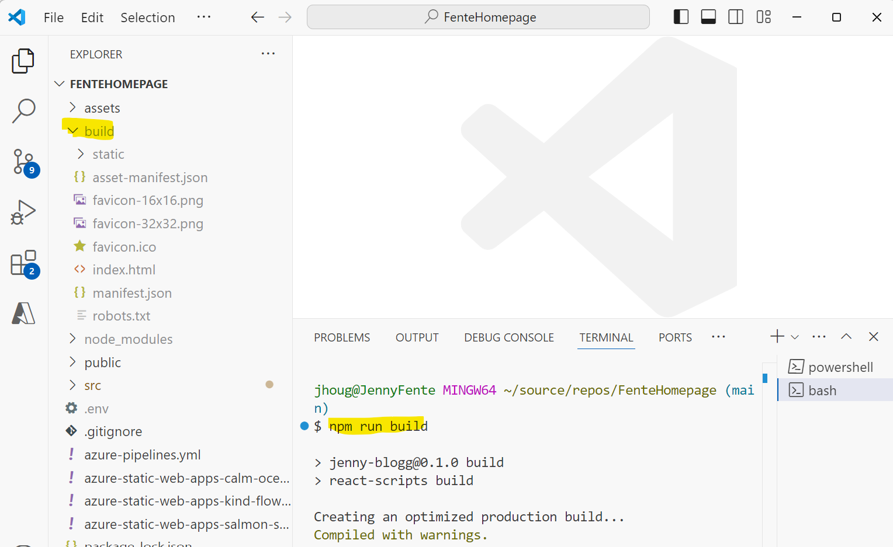

Deploy static html site to Azure static web app
Description
This tutorial is a step-by-step guide for deploy static web application where advanced build and deploy pipeline is not needed. It describes the steps of deploying your static files to an Azure Static Web App. The build and deploy pipeline can be added when needed, typically several developers working on same repository doing rapid changes (this is agility).
Prerequisites
- Azure CLI:
- Installing the Azure CLI: Download the installer from the Azure CLI Installation page for Windows.
- VS Code
- Node
Guidelines from Microsoft
Steps
1 Install SWA (Static Web Application) CLI
In VS Code open the terminal and change the folder to the web application. Install CLI for the static web app using node.
Note For local installation the parameter -g can be skipped
npm install -g @azure/static-web-apps-cli
2 Build artifacts
If the application is an React, Vue or Anglar application it should be prepared for deployment. Meaning transforming code into browser-compatible JavaScript, optimizing minimizing files etc.
For example a React application will generate the site in the build folder when running npm run build

3 Create the Azure Static Web App
You can create the Azure Static Web App using Azure Portal or form VS Code
4 Deploy to Azure using SWA CLI
Login to your azure subscription
/** Using az CLI **/
az login
/** or Using swa ClI **/
swa login
Deploy to the Azure static web app
swa deploy <folder to deploy> --app-name <name of the static web app> --resource-group <the static web app resource group> --env <environment>
Overview of command arguments swa deploy | Static Web Apps CLI
Sample
swa deploy ./build --app-name fente-homepage --resource-group fente-homepage-rg --env production